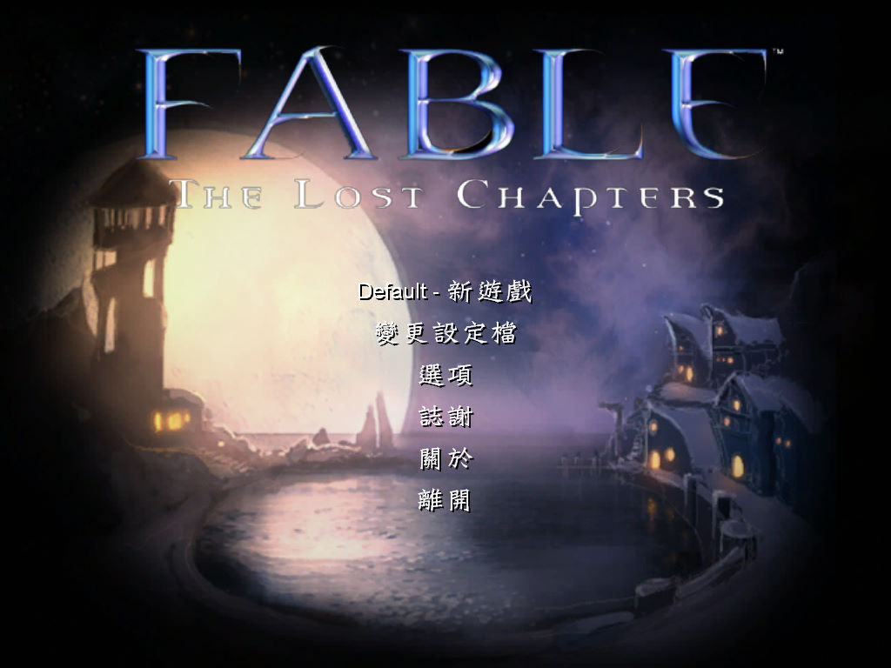
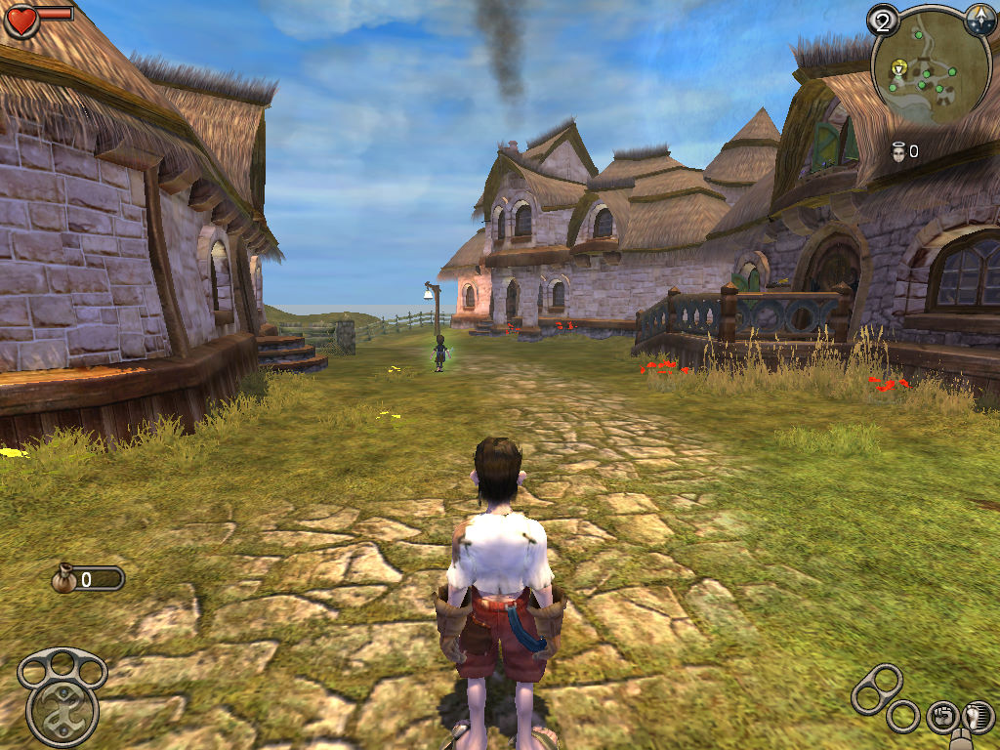

名稱：神鬼寓言：失落之章／失落的章節 (Fable: The Lost Chapters，中文版)
簡介：Lionhead 2004年出品的角色扮演遊戲，由Microsoft代理發行，以3D斜角畫面呈現，
採單人即時方式戰鬥。2005年推出擴展版，並以「失落之章（The Lost Chapters）」
做為副標題名稱銷售 [待補]。


保護：光碟SmartCE+序號（J2VV4-HQCX3-VYGM9-7RHRR-TVRYY）
備註：VirtualBox無法執行，虛擬機請使用VMware。
檔案：nocd.rar = 免光碟檔